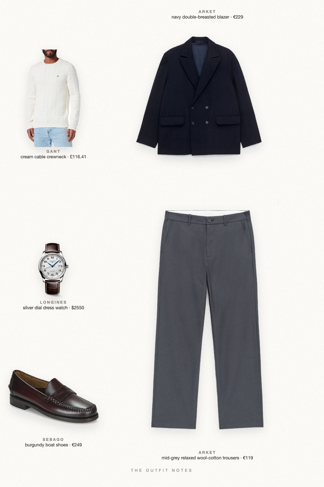
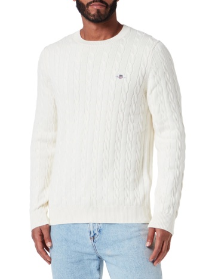

Burgundy Toast
navy blazer for the christmas table

What to wear for Christmas dinner men: an ARKET double-breasted navy wool blazer over a GANT cream cable knit, mid grey trousers and burgundy Sebago Classic Dan loafers as the festive accent. A Longines Master Collection watch finishes it. Classy holiday outfit, semi formal and old money.
The pieces
This page contains affiliate links: if you buy through them, we may earn a commission at no extra cost to you. Disclosure.
 ARKET
ARKET
Navy double-breasted blazer
Shop
GANT
Cream cable crewneck
Shop ARKET
ARKET
Mid-grey relaxed wool-cotton trousers
Shop Sebago
Sebago
Burgundy boat shoes
Shop Longines
Longines
Silver dial dress watch
Shop
Prices are indicative, taken when the look was published, and may have changed. Pictures of the outfit are AI-generated illustrations of real products; the product photos are the retailers' own.
Published 2 October 2026.